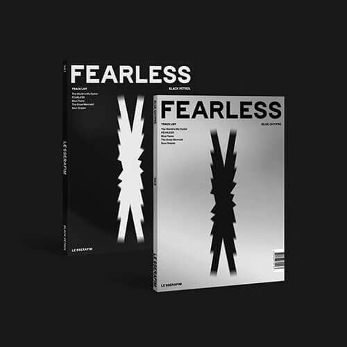
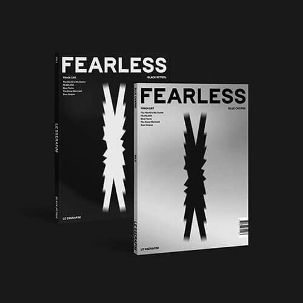
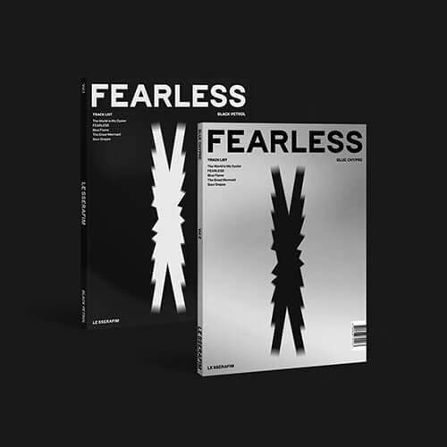

LE SSERAFIM (르세라핌) is a 5-member girl group under HYBE and Source Music. The members currently consist of Kim Chaewon,
Sakura, Huh Yunjin, Kazuha, and Hong Eunchae. LE SSERAFIM officially debuted on May 2, 2022 with their 1st mini album“FEARLESS” .On July 19, 2022, it was announced that Kim Garam had left the group
now lets talk about their positions~
Vocalist~ Kim chaewon & Huh Yunjin
Lead-vocalist ~ Kim chaewon
Performer ~ All of them
stage perfomance~ Hong Eunchae
Leader~ Kim chaewon
Japanese member~ Sakura miyawaki & Kazuha Nakamura
Rapper~ none
Maknae (youngest)~ Hong Eunchae
Unnie (oldest)~ Sakura Miyawaki
Dance~ All of them (ot5)
All rounder~ Huh Yunjin
🎼Le sserafim is a well-known kpop group is korea. They
are known as 'best group of 4th genaration' in kpop. Though, They are a band who works
together in a group, but it always felt like a family.
Albums & Musics ~ -Le sserafim has total 5 albums in order-
FEARLESS
Fearless is the debut extended play by South Korean girl group Le sserafim. It was released by Source Music on May 2,
2022, and contains five tracks, including the lead single of the same name. Fearless is the group's only release to
include Kim Ga-ram, who was removed from the lineup on July 20, 2022.
The album debuted at number two on the Gaon Album Chart and was certified double platinum by the Korea Music Content
Association (KMCA) for selling 500,000 units.

I'M “FEARLESS”
They are always called the best performer of these kpop girl groups. Fimmies did a great work in their debut❤️.
ANTIFRAIGLE
"Antifragile" is a song recorded by South Korean girl group Le sserafim for their second extended play of the same name.
It was released as the lead single of the EP by Source Music on October 17, 2022.
An upbeat pop and reggaeton track
infused with Afro-Latin production drives the message of overcoming hardships for growth and resilience. Written by
several contributors, including "Hitman" Bang and Isabella Lovestory, the song emphasizes the group's determination to
emerge stronger after facing hardships.
 
